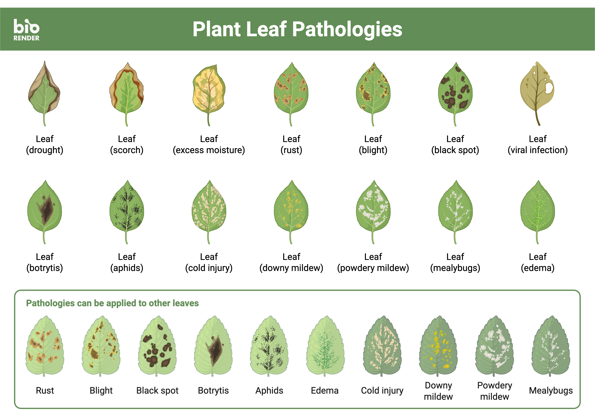
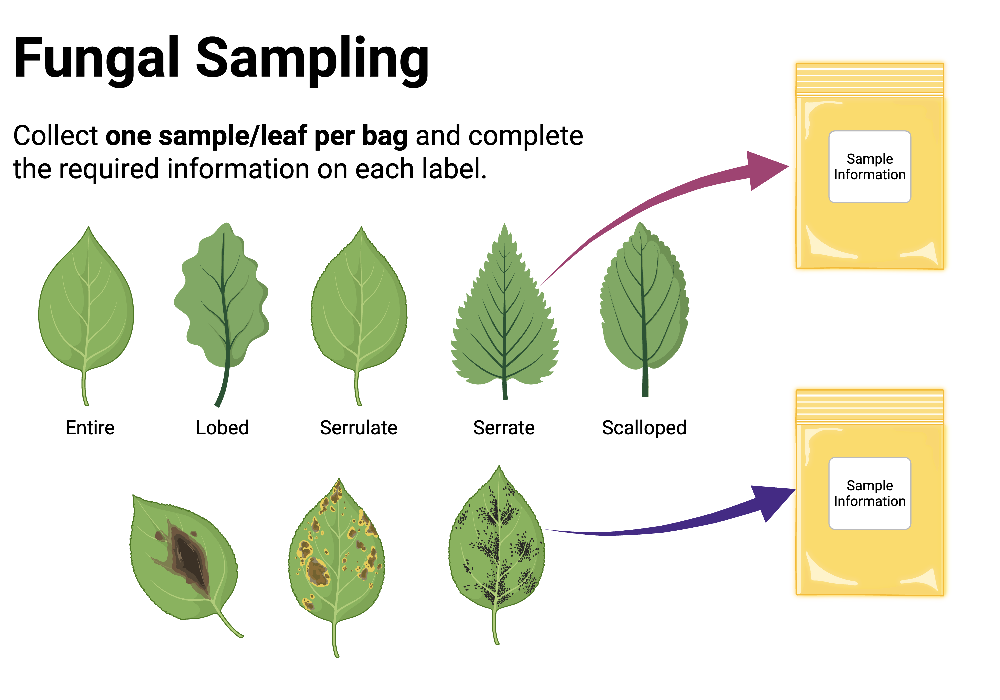
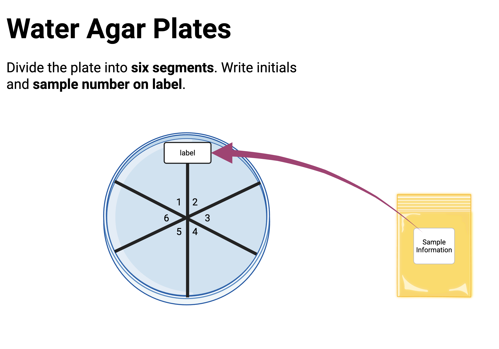
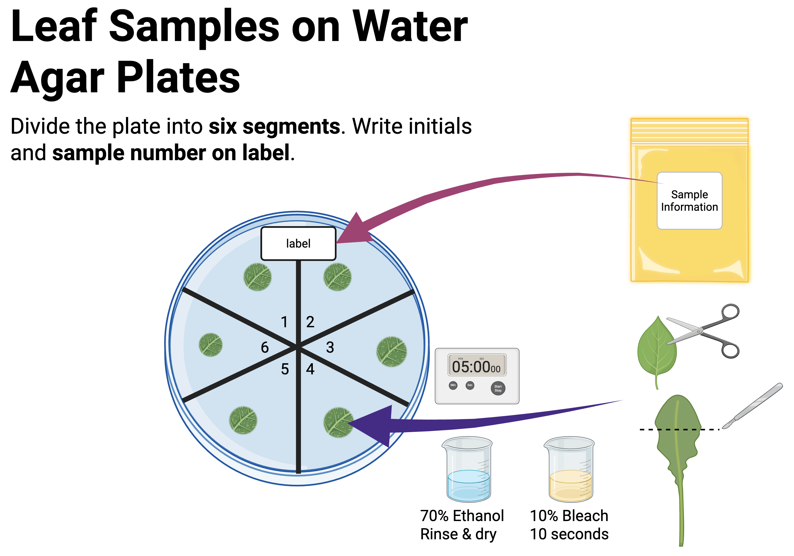

Module 1: Fungal Sampling
BSC 495 — The Hidden World’s Code
Overview
Module 1 covers four topics:
- Lab Prep — preparing water agar plates and sterile workspace
- Metadata — iNaturalist observations and sample naming
- Fungal Sampling & Culturing — isolating endophytes from leaves
- Using iNaturalist — making quality observations for the MycoEd project
Module 1.1
Instructor Lab Prep
Materials
Consumables - Bacteriological agar
Equipment - Scalpel (metal handle — plastic melts)
Creating a Sterile Environment
- Use a laminar flow hood when available
Warning
Fungi are generally not harmful, but may cause allergic reactions. Always use sterile technique and consult your instructor if you have concerns.
Water Agar Recipe
| Step | Detail |
|---|---|
| Suspend | 39 g bacteriological agar in 1 L distilled water |
| Dissolve | Heat to boiling |
| Sterilize | Autoclave at 121 °C / 15 lbs for 15 min |
| Pour | ~20 mL per 100×15 mm plate in sterile environment |
| Store | Refrigerate (~4 °C) until use |
Disposal
- Place all petri dishes in an autoclavable bag
- Sterilize at 121 °C / 15 lbs for 15 minutes
- Follow institutional protocol for post-sterilization disposal
Handle heavy metals and chemicals per institutional guidelines
Module 1.2
## Metadata Directions
What is Metadata?
Metadata is data about data — information that gives context to your samples.
For this project, metadata includes: - Fungal species, growth rates, images, and more —
Uploading to iNaturalist
- Select the plant you will isolate fungi from
- Upload an image of the plant to your course iNaturalist Project
- The fungal isolates and all associated data will be linked back to this observation
All data will be publicly available to researchers worldwide
Sample Naming Convention
[HostID]_[Initials]_[Leaf#][Section]
Note
Example: Tree is MycoED_004, initials are ABC, second leaf, third section →
MycoED_004_ABC_2c
Section — letter per cutting from that leaf
Recording Location (Lat/Long)
On a computer: iNaturalist observation → Map → Details → copy Lat/Long
On Android: Tap location icon → copy decimal degree coordinates
On iPhone (Google Maps):
- Open Google Maps → tap the location icon
- Long-press your location → bottom tab appears
- Scroll up to see coordinates (e.g.
45.123, -122.123) Long-press coordinates → Copy → paste into spreadsheet
Recording Elevation
- Go to your iNaturalist observation on a computer
- Click Details at the bottom of the map
- Click Macrostrat in the details window
Record elevation in meters from the upper-right corner
Canopy Position
Record which portion of the plant the leaf was collected from:
| Code | Position |
|---|---|
| L | Lower 1/3 of plant |
| M | Middle 1/3 of plant |
| U | Upper 1/3 of plant |
Module 1.3
## Fungal Sampling & Culturing
What are Fungal Endophytes?
- Influence biomass, water consumption, and resource allocation
Note
This project is part of the MycoEd Fungal Genomics Education Project — your isolates contribute to building high-quality fungal reference genomes.
Learning Goals
- Documentation using iNaturalist
- Practice sterile technique
- Culture and isolate fungi
- Investigate fungal endophytes
Characterize morphology of fungal cultures
Student Lab Supplies
- Gloves
- Fine-tip Sharpie
- Scalpel
- Forceps
- 70% ethanol
- Kimwipes and paper towels
- Parafilm
- Water agar plates
Formulate Your Research Question
Choose an endophyte community to investigate:
| Question | Approach |
|---|---|
| Diversity within one plant | Plate leaves from lower, middle, and upper canopy |
| Diversity within a species | Collect from multiple individuals of same species |
| Diversity across species | Collect from a variety of plant species |
You will culture fungi from a total of 18 leaf sections.
Bleach Solution Preparation
- Boil water for 10 minutes (or use distilled water)
- Let cool to room temperature
- Mix 1 mL household bleach in 500 mL sterilized water
This 10% bleach solution is used for surface sterilizing leaf tissue
Isolation Protocol — Overview
| Step | Action |
|---|---|
| 1 | Sanitize work surface |
| 2 | Sterilize tools with flame |
| 3 | Cut ~1 cm leaf tissue sections |
| 4 | Surface sterilize in bleach (10 sec) |
| 5 | Rinse in sterile water / 70% EtOH |
| 6 | Place up to 6 cuttings per water agar plate |
| 7 | Seal with Parafilm |
| 8 | Incubate at room temp in the dark; check daily |
Sealing with Parafilm
- Cut a strip slightly wider than the petri dish
- Remove the paper backing
- Hold one end on the lip of the dish
- Stretch and wrap around the dish — stretching creates the seal
No tape needed!
Module 1.4
## Using iNaturalist
Homework Assignment 1 — Set Up iNaturalist
In app settings: turn off Automatic Upload (recommended)
Homework Assignment 2 — Review Resources
Making Plant Host Observations
- Open iNaturalist and take a picture of the plant
- Include a field label in at least one image
- Photograph from multiple angles: whole plant, leaves, flowers, bark, trunk
- Add observation to your course project before saving
- Manually upload (if Auto Upload is off)
Add MycoEd ID field with the label ID number
Making Fungal Culture Observations
- Take pictures from top and bottom, including label
- Add observation to your course project
- Manually upload and verify online
- Add iNaturalist Observation Fields:
- DNA Sequence ITS — for ITS sequence data
- Host Observation — link back to the host plant observation
MycoEd ID — format:
MycoEd_004_ABC_2c
Summary — Module 1
- Record all metadata and sample names carefully




Continue in Workbook

BSC 495 | Module 1: Fungal Sampling | CC BY Carlos C. Goller